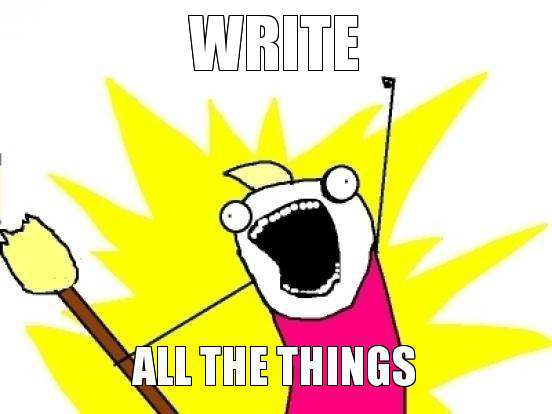

<!doctype html>
<html lang="en">
	<head>
		<meta charset="utf-8">

		<title>Learning Journals - Tracking your progress</title>

		<meta name="description" content="Using learning journals for reflective learning">
		<meta name="author" content="Philipp Hansch">

		<meta name="apple-mobile-web-app-capable" content="yes" />
		<meta name="apple-mobile-web-app-status-bar-style" content="black-translucent" />

		<meta name="viewport" content="width=device-width, initial-scale=1.0, maximum-scale=1.0, user-scalable=no">

		<link rel="stylesheet" href="css/reveal.min.css">
		<link rel="stylesheet" href="css/theme/solarized.css" id="theme">

		<!-- For syntax highlighting -->
		<link rel="stylesheet" href="lib/css/zenburn.css">

		<!-- If the query includes 'print-pdf', use the PDF print sheet -->
		<script>
			document.write( '<link rel="stylesheet" href="css/print/' + ( window.location.search.match( /print-pdf/gi ) ? 'pdf' : 'paper' ) + '.css" type="text/css" media="print">' );
		</script>

		<!--[if lt IE 9]>
		<script src="lib/js/html5shiv.js"></script>
		<![endif]-->
	</head>

	<body>

		<div class="reveal">

			<!-- Any section element inside of this container is displayed as a slide -->
			<div class="slides">
				<section data-markdown>
					<script type="text/template">
						# Learning Journals
						## Getting even more out of
						## your time at hackership.

						<small>Also available at [http://bit.ly/17DyFL6](http://bit.ly/17DyFL6)</small>
					</script>
				</section>

				<section data-markdown data-transition="none">
					<script type="text/template">
# What to write down

<p class="fragment">
	
</p>
				</script>
				</section>


				<section data-markdown>
					<script type="text/template">
# What to write down

 * Problems you solved
 * Ideas you find difficult or contradictory
 * What you understand
 * How you think you could <br />improve your learning
 * Take note of helpful resources


					</script>
					<aside class="notes">
					</aside>
				</section>

				<section data-markdown>
					<script type="text/template">
						# Why keep a journal

						*In my opinion*

						* 6 or even 10 weeks are over quickly.
						* Get the most out of a limited amount of time.
						* Helps you remember things and get better at learning.
						<br /><br /><br />

						<div class="fragment">
						Use your journal for your daily stand-up,<br />
						weekly demo sessions and write blog posts to help others.
						</div>
					</script>
					<aside class="notes">
					</aside>
				</section>

				<section data-markdown>
					<script type="text/template">
						# Tools
						### Keep it simple

						* Pen and paper
						* Text editor
						* Evernote / Similar
						* Recording audio
						* Automate some of it
					</script>
					<aside class="notes">
					All these tools didn't really work for me because either they require opening the file everytime or contained way too much bloat.
					</aside>
				</section>

				<section data-markdown>
					<script type="text/template">
# Jou*

* Ruby exercise
* Automation, yay!

<pre><code data-trim contenteditable>
gem install jou
jou --help
jou -a "Foo Bar"
</code></pre>

[Full documentation on Github](https://github.com/phansch/jou)
<br />
<small>*May or may not work on mac</small>


					</script>

					<aside class="notes">
						Install ruby to be able to install gems (http://guides.rubygems.org/rubygems-basics/#installing_gems)
					</aside>
				</section>

				<section data-markdown>
					<script type="text/template">
					# Questions?
					</script>

					<aside class="notes">
						Talk to me here, on irc, discourse
					</aside>
				</section>
			</div>

		</div>

		<script src="lib/js/head.min.js"></script>
		<script src="js/reveal.min.js"></script>

		<script>

			// Full list of configuration options available here:
			// https://github.com/hakimel/reveal.js#configuration
			Reveal.initialize({
				controls: false,
				progress: false,
				history: true,
				center: true,

				theme: Reveal.getQueryHash().theme, // available themes are in /css/theme
				transition: Reveal.getQueryHash().transition || 'default', // default/cube/page/concave/zoom/linear/fade/none

				// Optional libraries used to extend on reveal.js
				dependencies: [
					{ src: 'lib/js/classList.js', condition: function() { return !document.body.classList; } },
					{ src: 'plugin/markdown/marked.js', condition: function() { return !!document.querySelector( '[data-markdown]' ); } },
					{ src: 'plugin/markdown/markdown.js', condition: function() { return !!document.querySelector( '[data-markdown]' ); } },
					{ src: 'plugin/highlight/highlight.js', async: true, callback: function() { hljs.initHighlightingOnLoad(); } },
					{ src: 'plugin/zoom-js/zoom.js', async: true, condition: function() { return !!document.body.classList; } },
					{ src: 'plugin/notes/notes.js', async: true, condition: function() { return !!document.body.classList; } }
				]
			});

		</script>

	</body>
</html>
